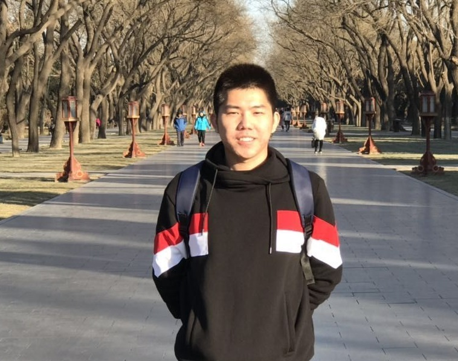
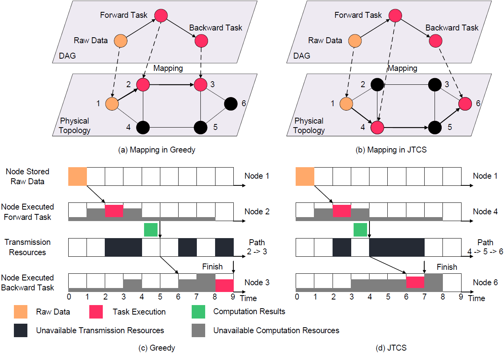
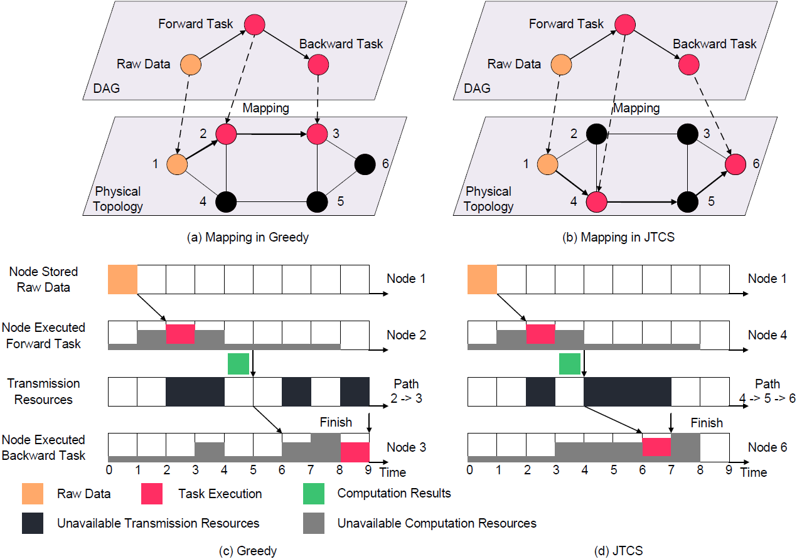

★ Highlights

Jialong Li
Postdoc Researcher
Max Planck Institute for Informatics (MPI-INF)
Email: ljialong [at] mpi-inf.mpg.de
MPII Profile |
Google Scholar |
ResearchGate |
GitHub |
ORCID
I am a postdoc researcher at Max Planck Institute for Informatics (MPI-INF) with Yiting Xia. My research interests include optical networks, optical data center networks, and computer networks.
Before joining MPI-INF, I received my B.E. and Ph.D. degree in Electronic Engineering from Tsinghua University in 2016 and 2021, respectively. I was advised by Prof. Xiaoping Zheng and Prof. Bingkun Zhou. My thesis was on the convergence of optical access networks and metro networks.





Conferences
Reviewer, WCSP 2019
Journals
Reviewer, IEEE/ACM Transactions on Networking
Reviewer, IEEE Communications Letters
Reviewer, IEEE/OSA Journal of Optical Communications and Networking
Reviewer, MDPI Mathematics
Reviewer, MDPI Applied Science
At Max Planck Institute for Informatics
Tutor, Hot Topics in Data Networks Seminar, Fall 2022
Co-Lecture, Data Networks, Spring 2022
Tutor, Hot Topics in Data Networks Seminar, Fall 2021At Tsinghua University
Teaching Assistant, Introduction to Information Science and Technology, Fall 2017
Teaching Assistant, Introduction to Information Science and Technology, Fall 2018
Tsinghua's Friend - Xiaomi Scholarship, 2020
The Second Prize of Comprehensive Scholarship, Tsinghua University, 2018
Excellence Scholarship for Social Work, Tsinghua University, 2014
Research Topics:
Optical Networks |
Optical Data Center Networks |
Computer Networks
Short Bio
Selected Publications

IEEE/ACM Transactions on Networking (ToN), vol. 27, no. 4, pp. 1460-1473, Aug. 2019
★ Highlights
IEEE Communications Letters, vol. 27, no. 9, pp. 1981-1984, 2017
IEEE Access, vol. 7, pp. 56753-56759, 2019.
Professional Services
Reviewer, IEEE Communications Letters
Reviewer, IEEE/OSA Journal of Optical Communications and Networking
Reviewer, MDPI Mathematics
Reviewer, MDPI Applied Science
Teachings
Co-Lecture, Data Networks, Spring 2022
Tutor, Hot Topics in Data Networks Seminar, Fall 2021
Teaching Assistant, Introduction to Information Science and Technology, Fall 2018
Honors and Awards
All rights reserved, Jialong Li, MPI-INF.
Last updated: May, 2023.